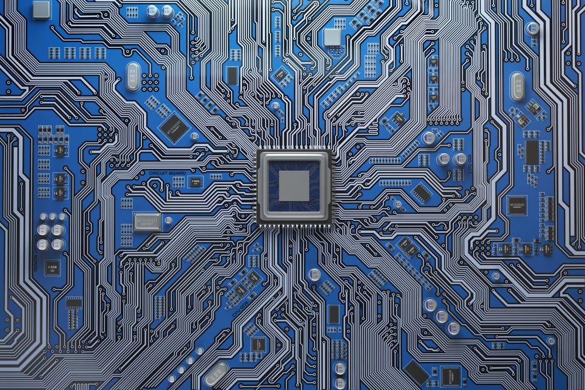
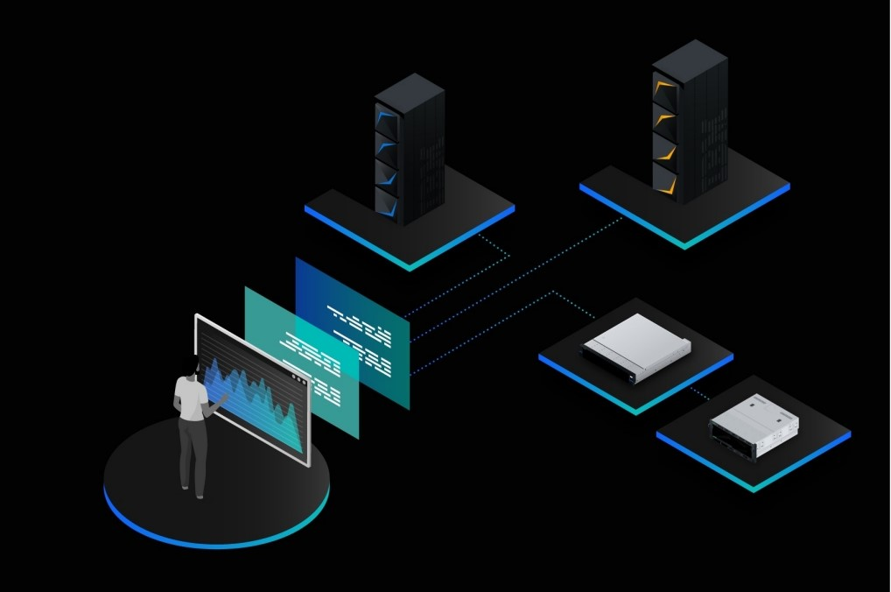

FUNDAMENTALS OF COMPUTING
This course, offered at the University of Belize, is an introduction to the fundamentals of Computer Science and serves as a foundation for future Computer Science courses.
Fundamentals of Computing is a broad survey of the discipline, through topics that allow students to understand and recognize the capabilities of computer systems in terms of:
1. Computer Architecture
2. Operating Systems and Computer Networks
3. Software and Software Development
4. Data Organization and Visualization
5. The Potential of the Commputing Machine